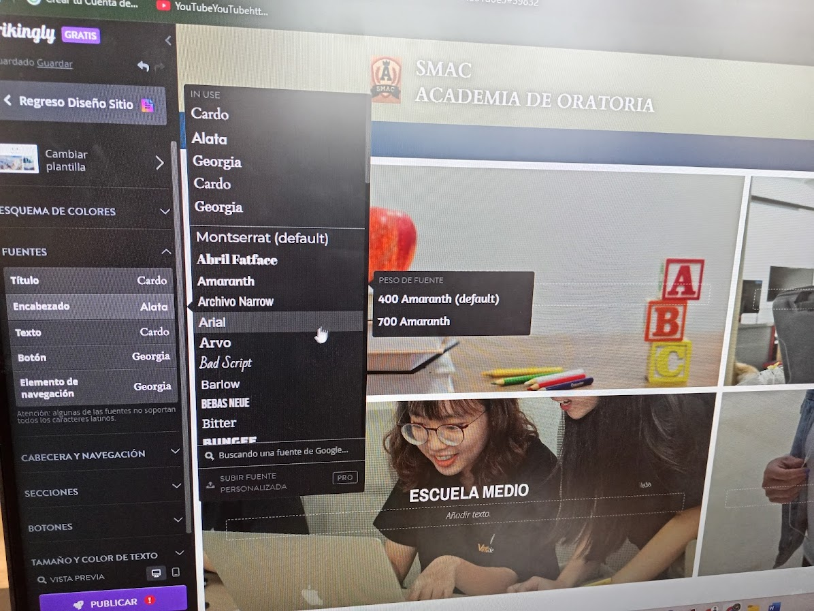
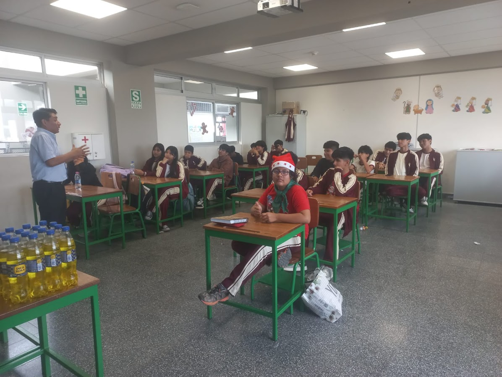
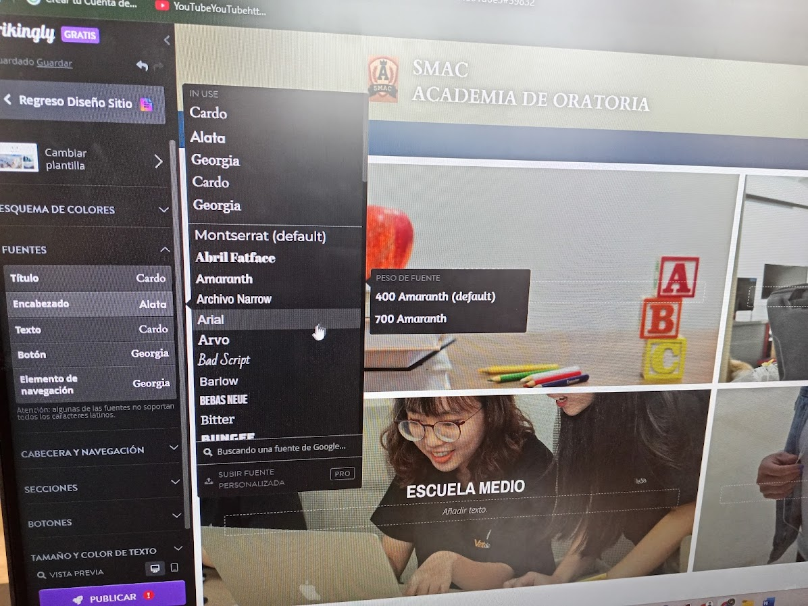
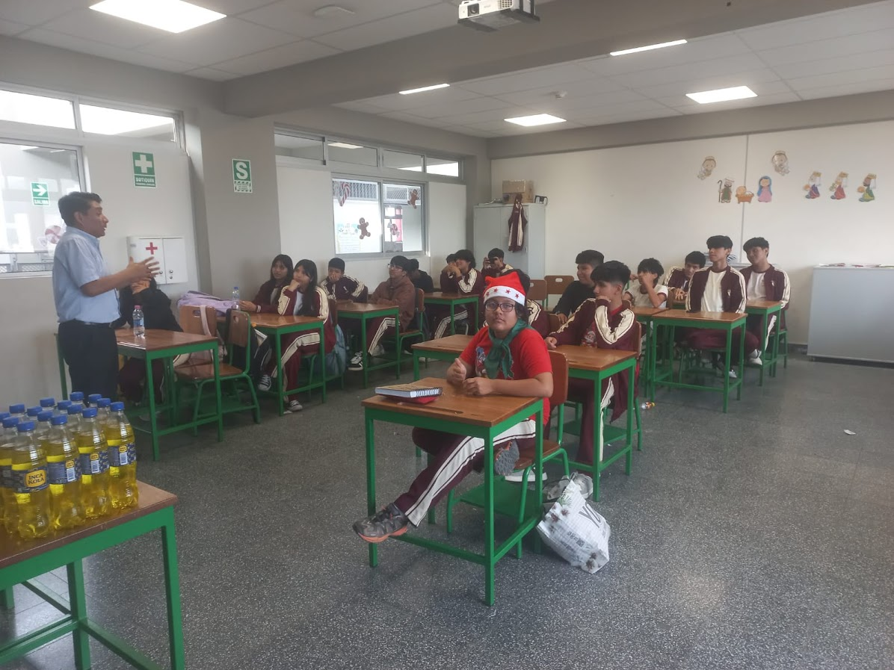

¿Quiénes somos?
Somos SMAC, una plataforma educativa juvenil dedicada a desarrollar la oratoria y el liderazgo en estudiantes de secundaria. Creemos que cada voz tiene poder y que, con práctica y motivación, cualquier estudiante puede expresarse con seguridad y convertirse en un verdadero líder.
 



HISTORIA:
SMAC nació de una necesidad muy presente en las aulas: muchos estudiantes sienten miedo al hablar en público, no confían en su voz y no encuentran espacios donde puedan entrenar sus habilidades de liderazgo.
Un grupo de jóvenes visionarios decidió transformar esta realidad creando SMAC, una plataforma digital que combina retos semanales, recursos prácticos y retroalimentación entre pares.
Con el tiempo, SMAC pasó de ser un simple proyecto escolar a convertirse en una comunidad viva y empoderadora, convirtiéndose en un símbolo de participación y liderazgo juvenil.